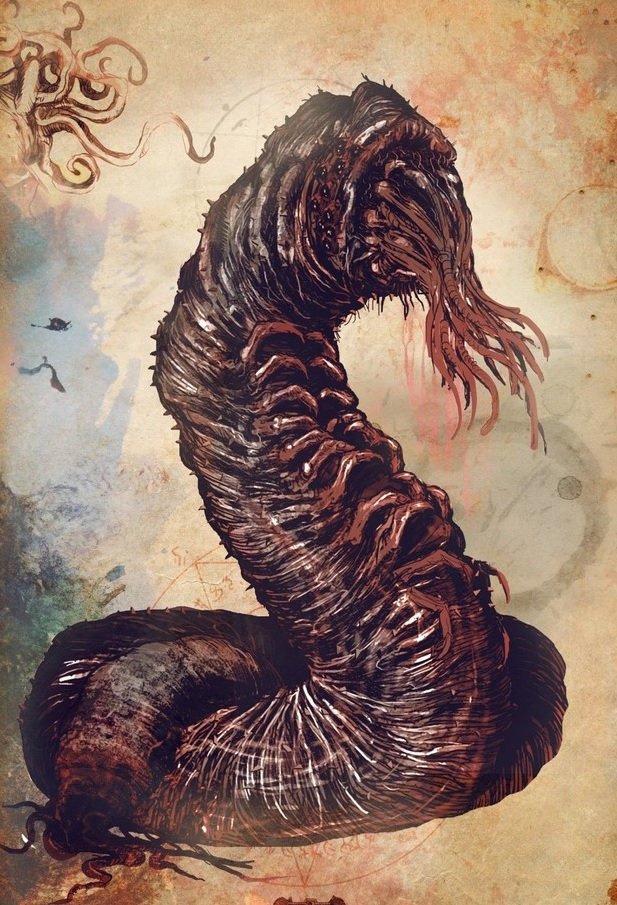

В кромешной тьме у подножия Тока, что в долине Пнат, куда гули сбрасывают обглоданные ими кости, ползают и роют свои норы исполинские бхолы. Никому из людей не доводилось видеть их, и лишь невнятные слухи говорят, что о присутствии бхолов можно узнать по тихому шуршанию, которое они издают, когда движутся меж гор костей, да по липкому прикосновению чего-то скользкого и извивающегося в темноте.
Другие слухи утверждают, что, бхолы похожи на белесых червей, которые, вырастая, достигают сотен футов и способны прогрызать норы даже между мирами, изъедая планеты, словно черви яблоко. И лишь заклинания из «Песнопений Бхолов» способны помочь ненадолго сдержать их, но они неведомы никому на Земле.
Бхолы впервые упоминаются в повести Г. Ф. Лавкрафта «Сновидческие искания неведомого Кадата» (The Dream-Quest of Unknown Kadath, 1927), однако в последующих изданиях произведения Август Дарлет исправил их название на «дхолов». Позднее оригинальная орфография Лавкрафта была восстановлена С.Т. Джоши.
